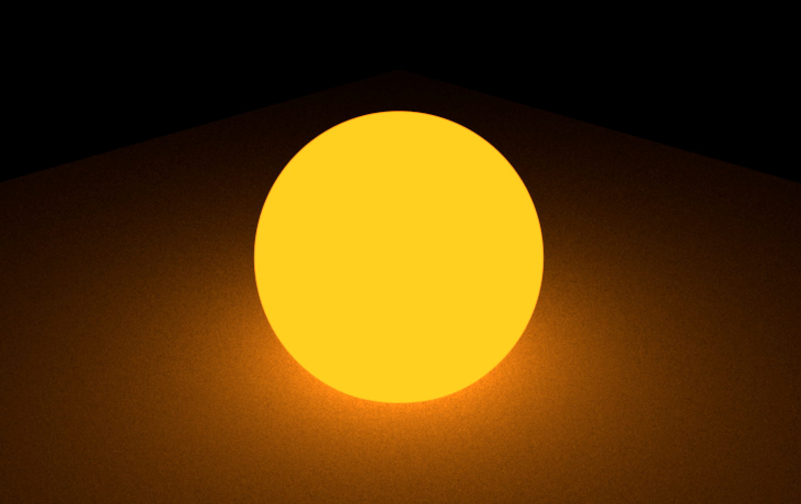
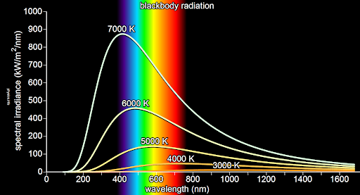
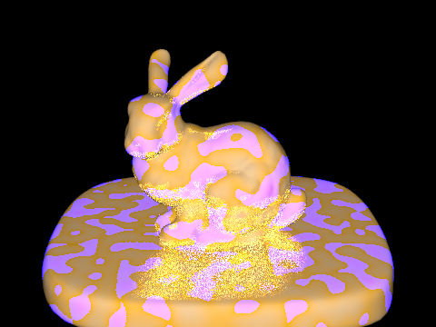
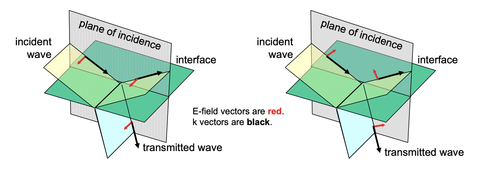
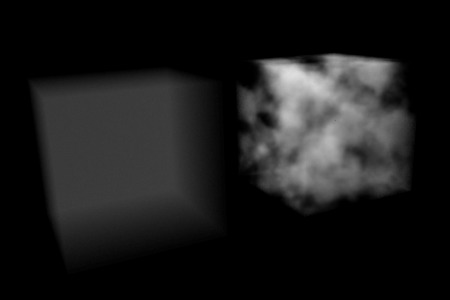
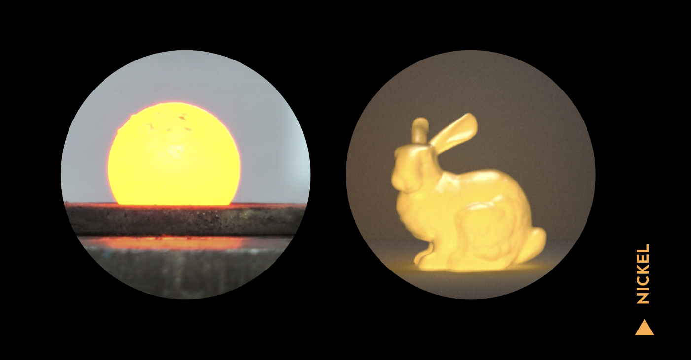
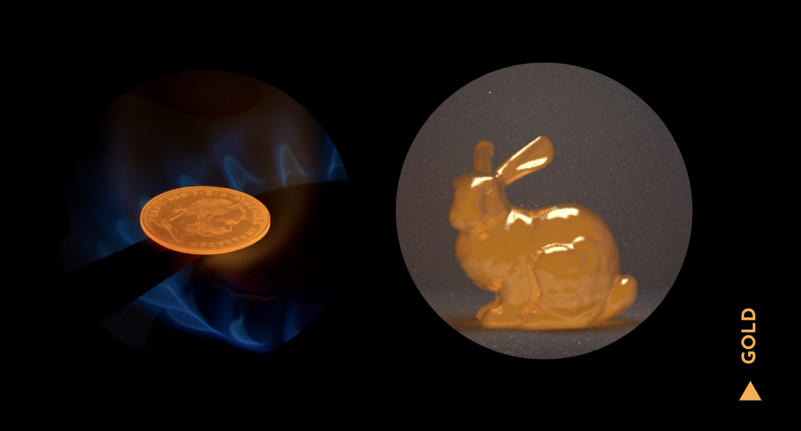

Emissive Heat
Material-Based Glow Simulation of Heated Metal Objects
Duration: 2 weeks
Team: 3 Developers (Jen Hoang, Ethan Buttimer, Susan Lin)
The Problem
As hobbyist animators, we have experience working in programs such as Autodesk Maya (used with Pixar RenderMan) to create 3D sets and animated shorts. However, from the experiences that we had applying glow attributes to our models, we found that the results fail to take into consideration material properties and variations in heat across a surface. Thus, they cannot be used to accurately represent objects that emit heat/energy and glow.
The Solution
For this project, we created functionality for a realistic representation of heated objects with diverse metal material properties. By doing so, we are able to demonstrate the different ways light emission can be simulated when considering the energy absorbance and reflectance properties of different materials. We also modeled how heat and the resulting glow could vary over a surface, by implementing volumetric temperature maps.
Diffuse Blackbody Emission
We start by implementing the glow of perfectly diffuse emissive objects for some input temperature. In this case, our object is an ideal blackbody that absorbs and re-emits all energy falling upon it. We compute the spectral radiance of our blackbody through Planck's law of black-body radiation.
Using this equation, we calculate a distribution of 81 discrete wavelengths ranging from 380 - 780 nm, roughly the human visual spectrum.
Reflectance
In order to control the glow attributes and inputs for different meshes, we create a GlowingBSDF class that expands on this previously build microfacet model. Here, we combine our estimate of blackbody radiation with the reflectance input of the metal, allowing us to realistically render changes in glow color as the temperature and metal material of our objects vary. The final sampled color is a combination of reflected and emitted light, weighted by the absorbance factor of the material (1 - reflectance). Kirchoff's Law of Thermal Radiation ensures that the energy of the system is conserved, resulting in more realistic renders.
Kirchoff's Law: At thermal equilibrium, the emissivity and the absorptivity of a surface at a given temperature and wavelength are equal
Color Reproduction
To compute a final color compatible with the computer display, we first convert the high dimensional spectrum to the three dimensional CIE 1931 XYZ color space, then apply a transformation matrix and gamma function to convert to sRGB.
Out-of-gamut colors for low temperatures (<2000K)
We were not initially able to reproduce the reddish emission color of objects heated to temperatures less than about 2000K, instead producing a range of strange pink hues. Converting from CIE XYZ to sRGB, we found that the resulting Spectrum sometimes contained a red value greater than 1, and a blue value less than 0. By clamping these values to the range 0 through 1, as required by the Spectrum class, this problem was fixed.
Polarization of Light
Experimenting with the polarization of light and how that might enhance our glowing effect, we tested out both dielectric-dielectric and dielectric-conductor Fresnel terms split between both s and p polarization. In differentiating S (perpendicular) polarization and P (parallel) polarization, the electric field is either perpendicular or parallel to the plane of incidence -- the plane that contains the incident and reflected wave vectors.
Ray Tracing Glowing Objects
To achieve both direct and global illumination, we altered the emissive function of our GlowingBSDF class to return a radiance Spectrum based on the direction of the incoming light ray and the temperature at the point of ray intersection. This allows us to simulate the glowing effect while visually preserving the object’s dimensionality.
Volumetric Temperature Maps
Additionally, we configured our COLLADA parser to read a temperature distribution tag that could process either a constant temperature, a linear gradient map, or a Perlin noise map. The code used to compute the Perlin noise function itself was found here, based on the original paper by Ken Perlin.
For a constant temperature, we apply a uniform temperature distribution throughout the entire mesh, based on a scalar temperature input.
For our linear gradient map, we obtain smoothly varying temperature values across the surface of our mesh through linear interpolation of two start and end temperature inputs at corresponding 3D vector positions.
For our Perlin noise map, we apply the Perlin noise function to obtain a pseudo-random temperature distribution ranging between two input temperatures. Another input controls the noise fineness - how quickly the temperatures fluxuate across 3D space.
Spectrum Caching
In order to improve program efficiency, we implemented a dynamic caching system that stored a map from integer-rounded temperatures to RGB Spectrums, reducing the amount of computation needed for repeated temperature samples.
No loss in image quality was detectible due to rounded temperature samples, as the bucket size is very small in comparison to the wide range of possible temperatures. Further research could determine the effectiveness of larger and/or adaptive bucket sizes, as greater temperature gaps are required to produce a visual difference in emission as overall temperature increases.
Using our caching system, slight but consistent improvements in render speed were observed with a variety of models, materials, sampling rates, and temperature distributions.
| Temperature distribution | Render run time... | Sampling rate (samples/pixel) | ||
|---|---|---|---|---|
| 1 | 8 | 64 | ||
| Constant | w/o caching (s) | 0.593 | 4.737 | 24.760 |
| w/ caching (s) | 0.558 | 4.091 | 23.249 | |
| Improvement | 6% | 14% | 6% | |
| Variable (noise) | w/o caching (s) | 0.693 | 4.609 | 24.625 |
| w/ caching (s) | 0.534 | 4.243 | 23.307 | |
| Improvement | 23% | 8% | 5% | |
References
- A Physically Plausible Model for Light Emission from Glowing Solid Objects (A. Wilkie and A. Weidlich)
- Improving Noise (K. Perlin)
- Perlin noise in C++11 (P. Silisteanu)
- How to convert between sRGB and CIEXYZ
- CIE Colour Matching Functions
- Fresnel equations
- Refractive Index Database
Varying Temperatures
Polarization of Light
Optical Material Properties
We used reflectance data from this website to obtain the reflectance and Spectrum values of specific metal materials in an attempt to produce realistic renders. From here, we compared our renders to photographs of real heated metals.


